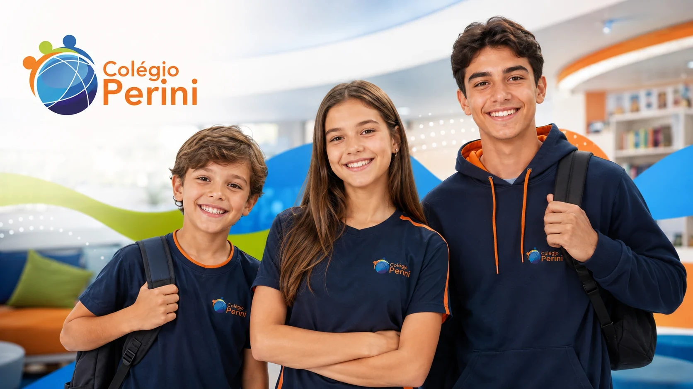
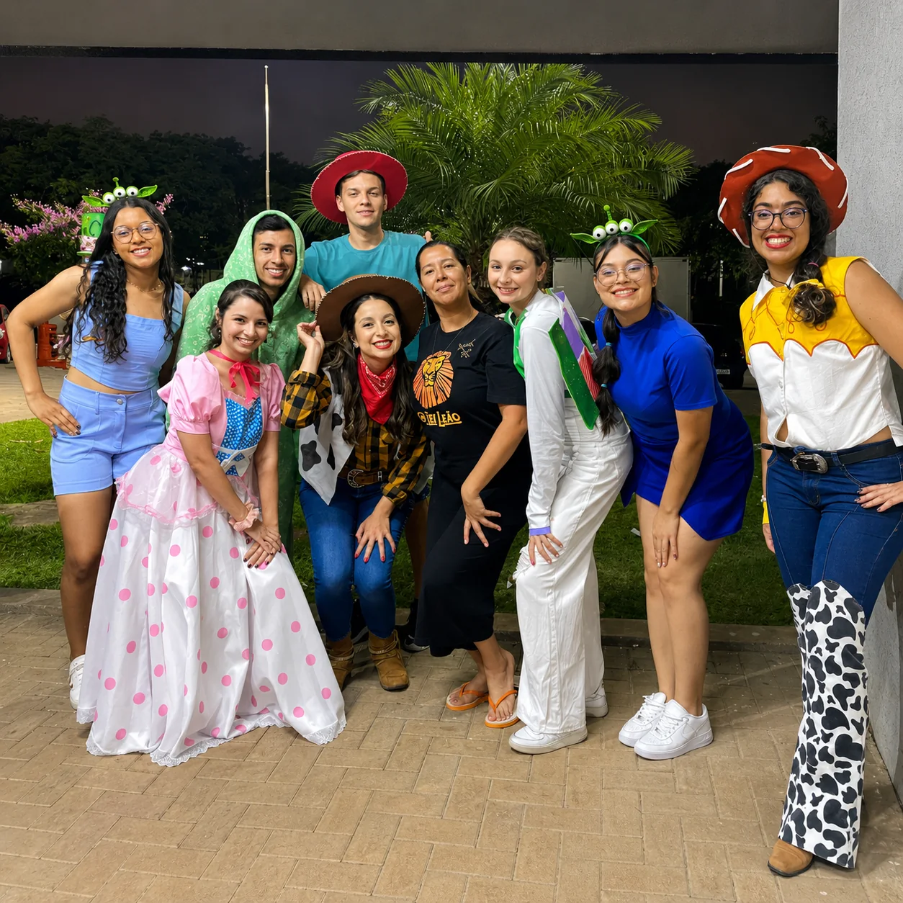
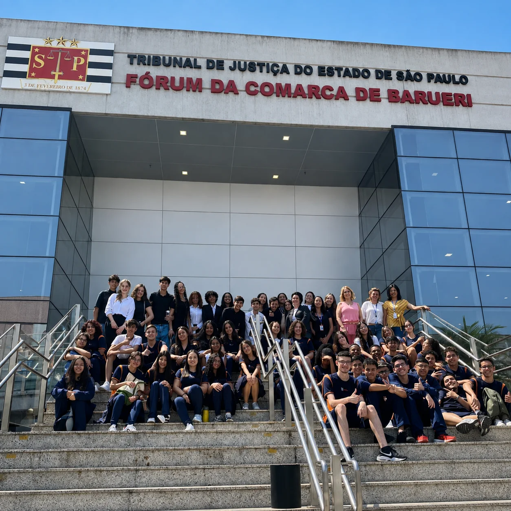

Salas equipadas
Ambientes preparados para a rotina escolar e o desenvolvimento das aulas.
Ambientes de aprendizagem, leitura, experimentação, convivência e movimento apoiam a proposta pedagógica ao longo da jornada escolar.

A estrutura divulgada pela escola reúne ambientes de aula, leitura, experimentação e práticas esportivas.
Ambientes preparados para a rotina escolar e o desenvolvimento das aulas.
Espaço para experimentação e aprendizagem prática.
Leitura, pesquisa e ampliação de repertório.
Movimento, convivência e práticas esportivas.
Pesquisa, cultura, ciência, tecnologia e cidadania aparecem em experiências que conectam teoria e prática.
Atividades culturais, convivência e trabalho de campo mostram diferentes formas de participar, criar e aprender.



A visita permite conhecer os espaços da escola e conversar com a equipe sobre como cada ambiente se conecta à proposta pedagógica e à rotina dos estudantes.
Na visita, converse com a equipe sobre como os ambientes apoiam diferentes momentos da jornada escolar.
Agende uma visita, conheça os ambientes e converse com a equipe sobre a rotina de cada etapa.